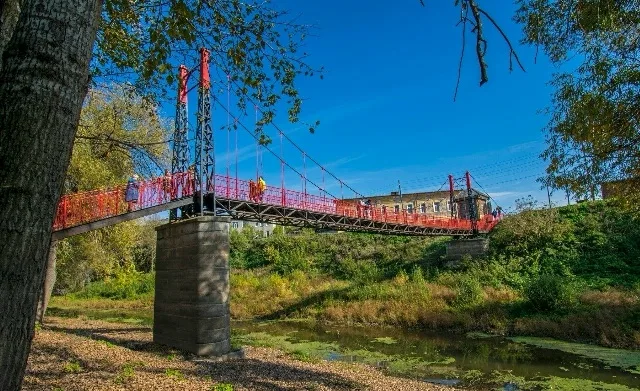

Ирбитская Дубовая роща
Оазис природы в сердце города
Для тех, кто хочет отдохнуть от городской суеты и насладиться природой, отличным местом станет Ирбитская Дубовая роща. Это уникальный природный объект, который является памятником природы и любимым местом отдыха горожан.

История рощи связана с ярмаркой: по легенде, первые дубы были привезены сюда купцами в середине XIX века. Сегодня это огромный благоустроенный парк с вековыми деревьями, тенистыми аллеями и уютными уголками для прогулок.
Здесь обустроены детские площадки, спортивные комплексы и зоны для пикника. В летнее время парк особенно красив, а осенью превращается в золотой ковер. Это идеальное место, чтобы подышать свежим воздухом и провести время с семьей или друзьями.